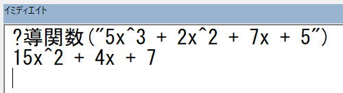

「VBAで導関数を求めよ」ツイッターのお題をやってみた
ツイッターで出題されたVBAの問題をやってみました。
ツイッターのエクセルおよびVBA関係の人達の間で問題を出し合うという事が行われています。
そんな中、現役高校生と思われる方からVBAの問題が出されました。
お題：「y = 5x^3 + 2x^2 + 7x + 5」の導関数を求めろ！
そもそも導関数って何だ?
というところから始めないと・・・
お題に関するツイート
お題：「y = 5x^3 + 2x^2 + 7x + 5」の導関数を求めろ！
| 時間 | ツイート本文 |
| 2020/2/9 18:30 | ふっふっふ、じじいにだってできたぞ。 もうゴリゴリと力で押しきったのだ。 ところで、これで良いのだよね、ちょっと不安・・・  |
| 2020/2/9 17:30 | ・=から右側だけ解析する ・スペース区切りはあてにしない ・x^-3は-3x^-4で良い こんな感じかな。 後は、*や/や()は出てこないのか、さすがに()でそれぞれにx^3とか入っていたら厳しいだろ。 もうそういうのは考えない事にしよう、そうしよう。 これでVBA書けるのかな・・・ |
| 2020/2/9 17:02 | これでようやくVBAを書くことができるぞ。 いや待て、まだちゃんと定義できていないことが残っているようだ。 ・x,yしかアルファベットは出てこないのか? ・半角スペースで区切られていない場合もありえるのか? ・マイナスべき乗は、x^-3は-3x^-4で良いのか? |
| 2020/2/9 16:44 | つまり、 y = 5x^3 + 2x^2 + 7x + 5 これを微分すると、 y = 15x^2 + 4x + 7 これで良いのかな。 あれ、もう一回微分しちゃダメですか?、もっと簡単になるけど、ダメなんだよね。 |
| 2020/2/9 16:35 | へっへっへっ、ついにたどり着いたぞ、これだな。 youtube素晴らしいじゃあないですか。 https://t.co/QrZNeyQI5o |
| 2020/2/9 16:29 | 「微分係数」理解したぞ、「x=aでの微分係数は、x=aにおける接線の傾きです。」なるほど、なるほど、そうですか。 あれ、導関数を求めるのに関係あるのか、関係ないのか、、、 |
| 2020/2/9 16:20 | 続きをやろうかと調べ始めたら、また新しい言葉が、 「微分係数」 えーと、なんですか、それは、、、 もはや、近づいているのか、遠ざかっているかもわからなくなってきた、、、 |
| 2020/2/8 22:47 | さらに出てたぞ、 x^2 の微分は 2x x^3 の微分は 3x2 x^4 の微分は 4x3 そうか、そうだったのか・・・ すみません、この辺で勘弁してください?? |
| 2020/2/8 22:43 | ふっふっふっ、なんか出てたよ。 x^n の微分は二項定理 1/x の微分は分数式の計算 √x の微分は有理化 sin x の微分は三角関数の加法定理 e^x の微分はネイピア数の性質 つまり、今回は二項定理ですな。 |
| 2020/2/8 22:34 | いや、知ってるよ、微分でしょ。 limだとかx→0だとかってやつでしょ。 知ってますよ、もう。 limってリミットって読むでしょ、私クラスになるとね、リーメスって読みますから。 |
| 2020/2/8 22:29 | 「導関数を求めよ」理解したぞ、つまりは「微分せよ」ということですな。 なんだー、最初からそういってくれればいいのに。 ところで、「微分」って何だ・・・ |
| 2020/2/8 21:07 | そもそも「導関数」って何だ・・・ |
導関数を求めるVBA関数
Option Explicit
Sub test()
Const q = "y = 5x^3 + 1.5x^2.5 + 7x+5"
Debug.Print q
Dim s As String: s = q
If InStr(q, "=") > 0 Then s = Mid(q, InStr(q, "=") + 1)
Debug.Print "y' = " & 導関数(s)
End Sub
Function 導関数(q As String) As String
Dim s() As String
s = Split(空白区切(q), " ")
Dim s1
Dim i As Long
For i = LBound(s) To UBound(s)
If Not (s(i) = "+" Or s(i) = "-") Then
s(i) = 微分の法則(s(i))
End If
Next
導関数 = Trim(Join(s))
If Right(導関数, 1) = "+" Or Right(導関数, 1) = "-" Then
導関数 = Left(導関数, Len(導関数) - 1)
End If
導関数 = Trim(導関数)
End Function
Function 空白区切(ByVal s As String) As String
s = Replace(s, "X", "x")
s = Replace(Replace(s, "+", " + "), "-", " - ")
s = Replace(s, "^ - ", "^-") '後から追加
Do
s = Replace(s, " ", " ")
Loop Until Len(s) = Len(Replace(s, " ", " "))
空白区切 = s
End Function
Function 微分の法則(ByVal s As String) As String
Dim ary
If InStr(s, "x") = 0 Then
微分の法則 = ""
Exit Function
End If
If InStr(s, "^") = 0 Then
微分の法則 = Replace(s, "x", "")
Exit Function
End If
ary = Split(Replace(s, "x", ""), "^")
微分の法則 = IIf(ary(0) = "", 1, ary(0)) * ary(1) & _
"x" & _
IIf(ary(1) = 2, "", "^" & ary(1) - 1)
End Function
実行結果は、
ちゃんと動作してますね！指数のとこ小数点でも上手く実行できるんでしょうか？出来たらさらに応用の幅広がりますね
「微分の法則」これなら意図は伝わるでしょって感じです。
という事で、小数もやってみました。
キーとなる文字はxと^だけなので、他ははそのまんま処理しているだけです。
これで良いのか悪いのか、良く分からないのでとりあえず良い事にしておきます。
同じテーマ「エクセル雑感」の記事
将棋とプログラミングについて～そこには型がある～
「VBAによる解析シリーズその2 カッコ」をやってみた
ツイッターで出されたVBAのお題をやってみた
「VBAで導関数を求めよ」ツイッターのお題をやってみた
ツイッターのお題「君の名は？」
ツイッターのお題「CSV編集」
アルファベットの26進（ツイッターお題）
ナンバープレート数字遊び：ツイッターお題
保護されたブックの非表示シートについて
文字列のセルだけ結合
時間に関する関数の扱い方
新着記事NEW ・・・新着記事一覧を見る
VBA100本ノック 100本目：WEBから100本ノックのリストを取得｜VBA練習問題（3月3日）
VBA100本ノック 99本目：自動席替え（行列と前後左右が全て違うように）｜VBA練習問題（3月2日）
VBA100本ノック 98本目：席替えルールが守られているか確認｜VBA練習問題（3月1日）
VBA100本ノック 97本目：Accessデータを取得（グループ集計）｜VBA練習問題（2月27日）
VBA100本ノック 96本目：Accessデータを取得（マスタ結合&抽出）｜VBA練習問題（2月26日）
VBA100本ノック 95本目：図形のテキストを検索するフォーム作成｜VBA練習問題（2月24日）
VBA100本ノック 94本目：表範囲からHTMLのtableタグを作成｜VBA練習問題（2月23日）
VBA100本ノック 93本目：複数ブックを連結して再分割｜VBA練習問題（2月22日）
VBA100本ノック 92本目：セルの色を16進で返す関数｜VBA練習問題（2月20日）
VBA100本ノック 91本目：時間計算（残業時間の月間合計）｜VBA練習問題（2月19日）
アクセスランキング ・・・ ランキング一覧を見る
1.最終行の取得（End,Rows.Count）｜VBA入門
2.RangeとCellsの使い方｜VBA入門
3.変数宣言のDimとデータ型｜VBA入門
4.マクロって何？VBAって何？｜VBA入門
5.Range以外の指定方法（Cells,Rows,Columns）｜VBA入門
6.セルのコピー&値の貼り付け（PasteSpecial）｜VBA入門
7.繰り返し処理（For Next)｜VBA入門
8.セルに文字を入れるとは（Range,Value）｜VBA入門
9.マクロはどこに書くの（VBEの起動）｜VBA入門
10.とにかく書いてみよう（Sub,End Sub）｜VBA入門
このサイトがお役に立ちましたら「シェア」「Bookmark」をお願いいたします。
記述には細心の注意をしたつもりですが、
間違いやご指摘がありましたら、「お問い合わせ」からお知らせいただけると幸いです。
掲載のVBAコードは動作を保証するものではなく、あくまでVBA学習のサンプルとして掲載しています。
掲載のVBAコードは自己責任でご使用ください。万一データ破損等の損害が発生しても責任は負いません。